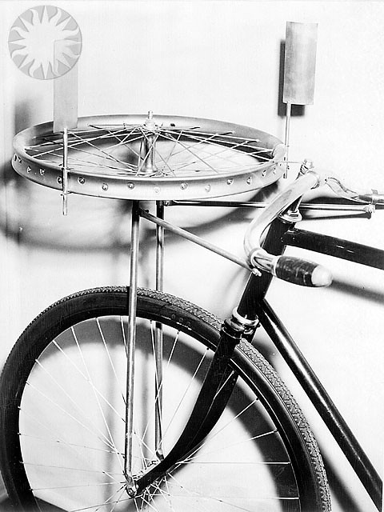
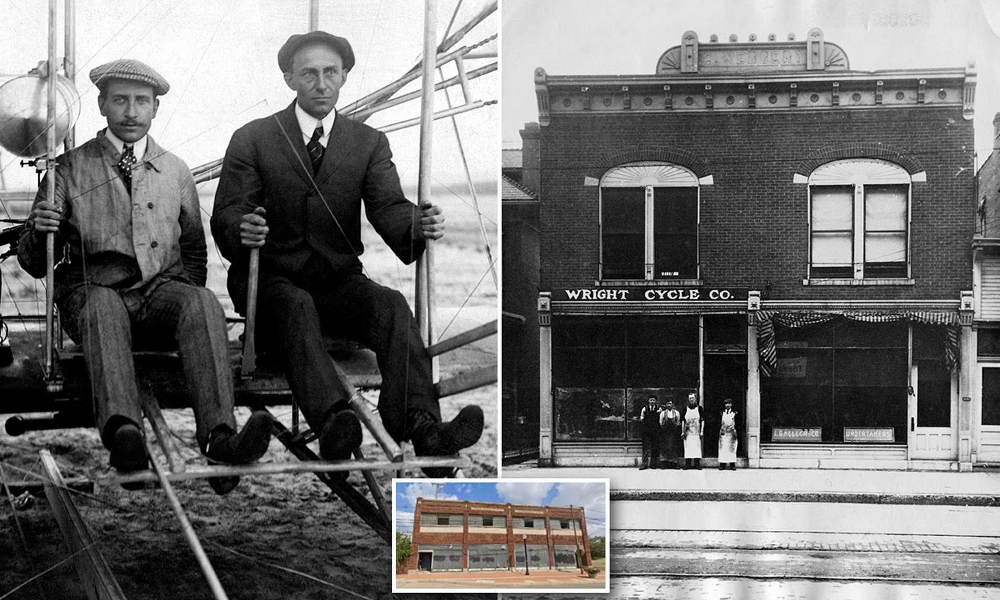

Digitix08's Testsite |
|
| Home | Search Login Games Articole parinti Pastila tehnică |
|
Postarea 10 Tehnica Știați cã primul zbor controlat (cu o aeronavã manevrabilã) al fraților Wright din 1903 ar fi încãput într-un Boeing 747? Posesori ai unui umil atelier de biciclete, aceștia au reușit sã zboare înaintea multor alți pionieri, unii dintre ei cu studii sau având chiar finanțãri guvernamentale. Acest lucru nu a fost întâmplãtor, Orville și Wilbur studiind inițial tot ce se publicase în domeniu, apoi continuând propriile studii in domeniul profilelor aerodinamice. Interesant este ca in Europa, plinã de societãți aeronautice la vreme aceea, premiera lor a fost recunoscutã doar dupã cinci ani, când au avut ocazia sa zboare la Paris. Inițial în fața unei audiențe de 200 de spectatori, pentru urmãtoarele demonstrații audienta a crescut pânã la 100.000 de oameni. "Nu este nevoie sa privim prea departe în viitor; avem deja suficiente
certitudini cã acesta va fi magnific. Trebuie doar sã ne grãbim și sã deschidem
cãile cãtre acesta." https://images.app.goo.gl/mUAeUKgknvqigfPR7  https://images.app.goo.gl/u17yyZyJM2XMkgss8  |
|